List Of All The Blocks
- •
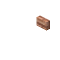
Aspen Button - •
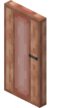
Aspen Door - •
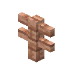
Aspen Fence - •
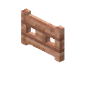
Aspen Fence Gate - •
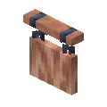
Aspen Fence Gate - •
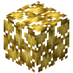
Aspen Log - •
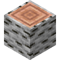
Aspen Log - •
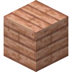
Aspen Planks - •
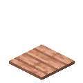
Aspen Pressure Plate - •
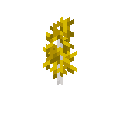
Aspen Sapling - •
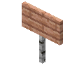
Aspen Sign - •
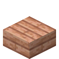
Aspen Slab - •
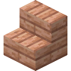
Aspen Stairs - •
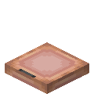
Aspen Trapdoor - •
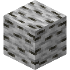
Aspen Wood - •
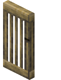
Baobab Door - •
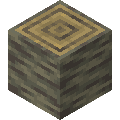
Baobab Log - •
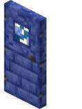
Blue Enchanted Door - •
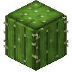
Cactus Barrel - •
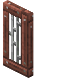
Cika Door - •
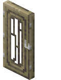
Cypress Door - •
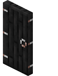
Ebony Door - •
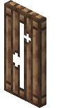
Fir Door - •
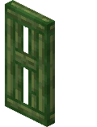
Florus Door - •
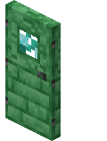
Green Enchanted Door - •
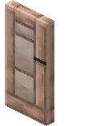
Holly Door - • + many more coming to the list!